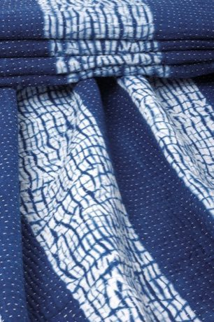
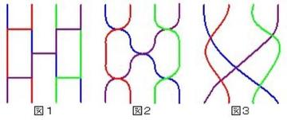

Home / Living Traditions / Japan and Korea
Playable heritage gameShibori Indigo Fold
Also known as Shibori 絞り
In shibori, cloth is folded, bound or clamped so that the dye cannot reach the pressed parts, then dipped in indigo. Opened out, the cloth shows a pattern that repeats and mirrors the way it was folded. This game is the folding that comes before the dye bath.

How to play
- The framed shape is the folded bundle of cloth that goes into the dye.
- Choose folds: halves and corner folds that bring the cloth down to that bundle.
- Layers stay where they land, so the order of folds matters; Undo takes back a fold.
- Press Check when your bundle matches the frame.
Rules at a glance
- Creases lie on fixed lines: across the middle, or along a diagonal.
- You may use one fold more than the target needs.
- Three stars need a bundle almost exactly the framed shape.
- The dyeing and the unfolded pattern are told in the note below, not played.
About the tradition
Folded and clamped resist dyeing is a long-lived craft of Japan, where Arimatsu and Narumi near Nagoya became well known for shibori, and a close cousin of the tied-dot cloth of Gujarat and Rajasthan in India. Indigo is the classic dye: the cloth comes from the vat green and turns blue as it meets the air. Every even fold gives a mirrored pattern, which is why folded shibori looks so orderly.
Origins
A living tradition passed from person to person; it is not tied to a single dated origin. It belongs to the cultural world of Japan and Korea.
Credits
- Craft model: World Heritage Games (original)
- Photo: Saimon2000bd, CC BY-SA 3.0, source on Wikimedia Commons
- Text: CC BY-SA 4.0, World Heritage Games.
Sources

Get the app
Shibori Indigo Fold is coming to the App Store and Google Play. One app, many traditions, no account needed.
Included in Paper & Paint Crafts of World
More games to play


More from Japan


Blacksmith's Forge
United Kingdom +4 · Crafts and making


Dougong Bracket Stacking
China +2 · Puzzles and mind games
Dumpling Pleating
China +2 · Crafts and making